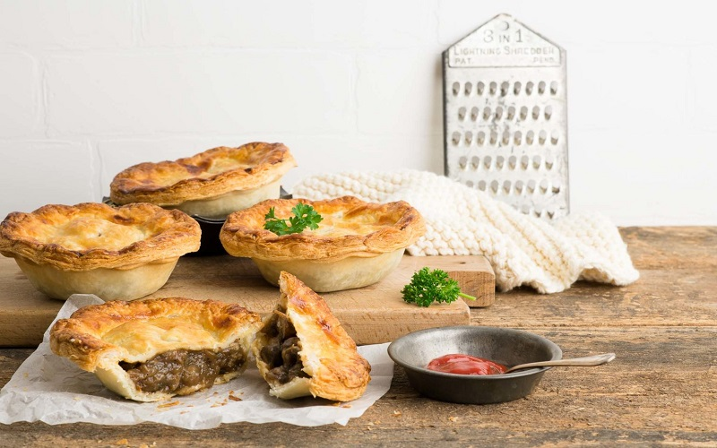
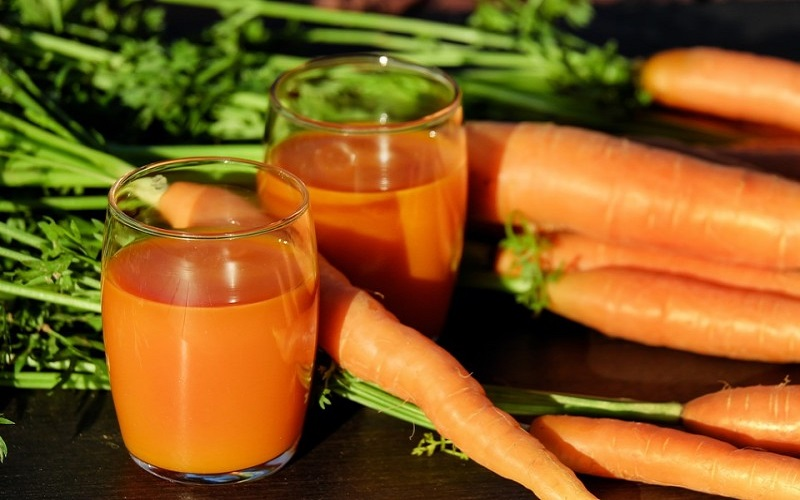

내가 좋아하는 요리 레시피
고기파이

겉은 바삭! 속 안은 매콤하고 부드러워요~ 성장기 아이들에게 좋은 고기파이!
재료 목록
| 재료 | 용량 |
|---|---|
| 돼지고기 안심 | 300g |
| 양파 | 1개 |
| 할라페뇨 | 15개 |
| 통조림 옥수수 | 6큰술 |
| 표고버섯 | 6개 |
조리 순서
- 돼지고기 안심은 칼을 이용해서 잘게 다진 후 청주, 생강즙, 소금, 후춧가루로 밑간을 해 주세요.
-
양파와 표고버섯은 듬성듬성 다져 주세요. 너무 잘게 다지면 씹는
식감이 떨어지니 굵게 다져 주세요.
통조림 옥수수는 물에 살짝 씻어 물기를 제거해 주시고 할라페뇨 역시 잘게 다져 주세요. 파프리카도 굵게 다져 주세요. - 분량의 재료를 넣고 소스를 만들어 주세요. 한국인의 입맛에 맞게 약간 매콤하게 만들었습니다.
해물파전

바삭한 해물파전
비오는 날 해물파전
간단한 술안주 해물파전
재료 목록
| 재료 | 용량 |
|---|---|
|
밀가루 혹은 부침가루 |
1/3bowl |
| 물 | 1/2컵 |
| 오징어 | 1/2마리 |
| 쪽파 | 1/2단 |
조리 순서
-
쪽파는 500원짜리 동전크기로 준비하고,
흐르는 물에 뿌리부분 껍질 하나씩 벗기며 씻어주고 뿌리 끝부분 잘라주세요.
물기를 채반에 걸쳐 빼주세요. - 물과 밀가루 또는 부침가루 비율을 1:1로 섞어주세요
- 오징어도 1마리도 깨끗이 손질해준 뒤 원하는 크기로 잘라주세요.
-
완성된 반죽에 부추+오징어 섞어 주세요.(순서 3번에 4,5번을 혼합)
팬에 식용유를 두르고 달궈지면 혼합된 반죽을 올려 강불에 나두고 바삭하게 부치면 완성입니다.
당근사과주스

미세먼지가 심한 요즘, 눈 건강도 신경쓰이시죠?
그래서 눈 건강을 위한 당근사과주스를 가지고 왔습니다.
건강한 눈을 위한 선택! 당근사과주스 한잔은 어떠세요?
재료 목록
| 재료 | 용량 |
|---|---|
| 당근 | 반개 |
| 사과 | 1개 |
| 꿀 | 3스푼 |
| 물 | 3큰술 |
| 레몬즙 | 반큰술 |
조리 순서
- 당근과 사과의 껍질을 벗겨주시고 토막토막 잘라주세요.
-
믹서기 통에 토막낸 당근과 사과를 담고
꿀과 물을 레몬즙을 취향에 맞게 부어줍니다.